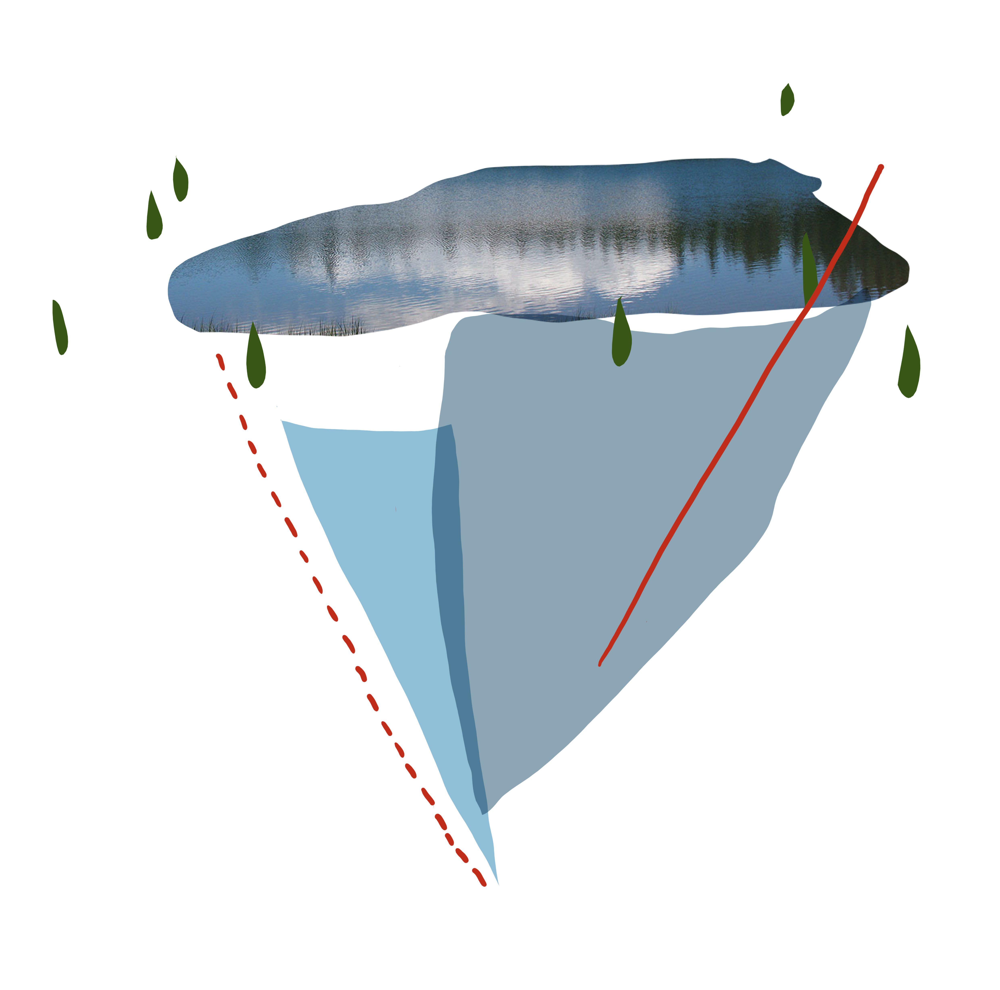
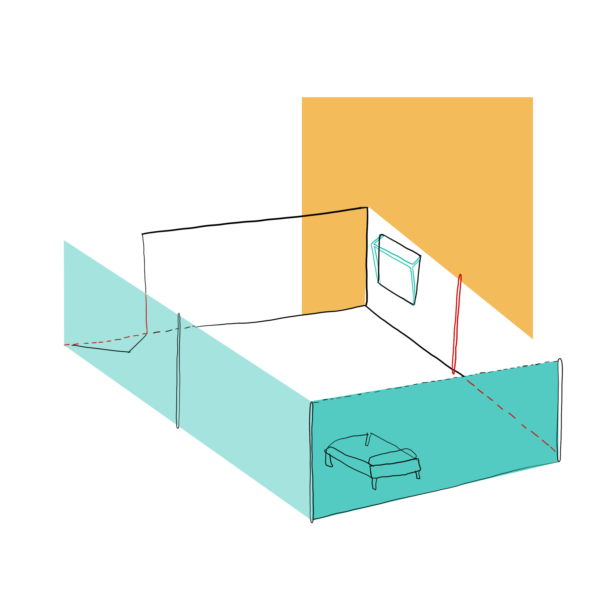
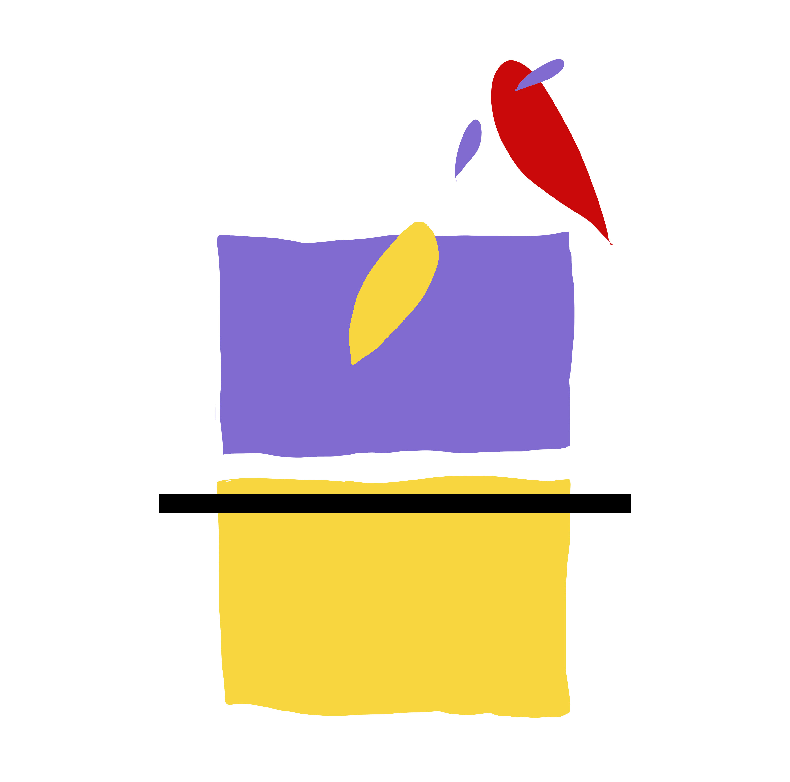
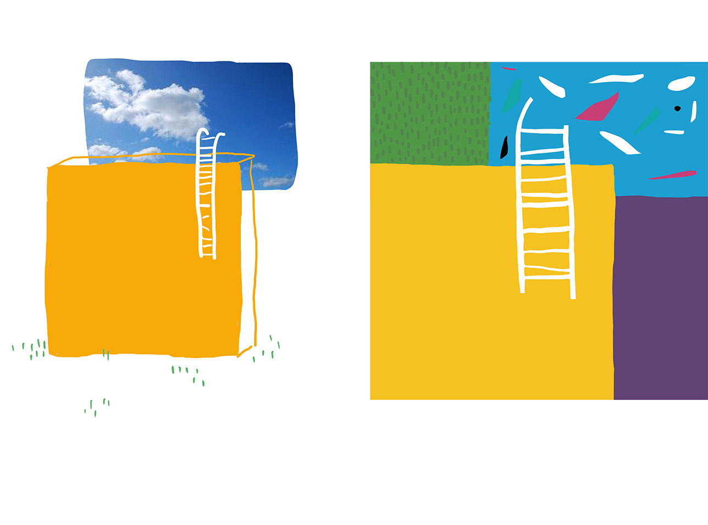
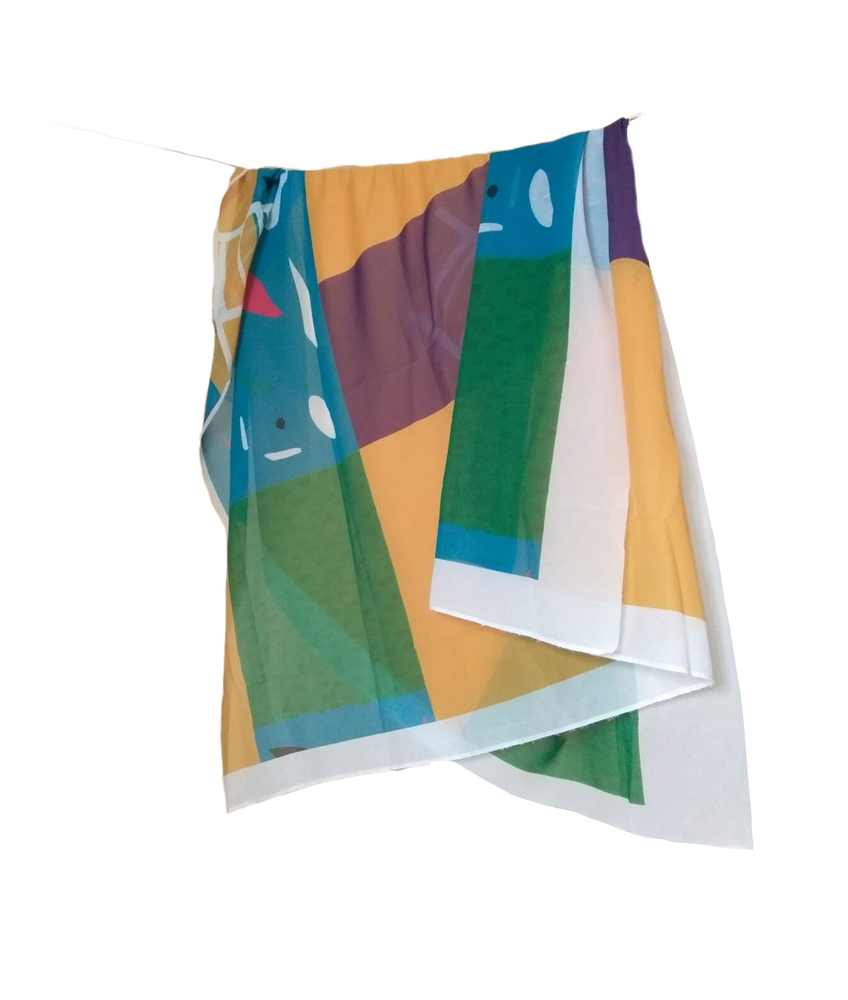

On the way -and still at home- es un proyecto acerca del hogar
que comienza en un cuaderno de bocetos: El diario ilustrado de un viaje en el que el concepto de hogar se libera de sus fronteras físicas para adaptarse a cualquier punto del espacio y del tiempo.
Y es que la falta de una casa estable no tiene por qué significar una carencia de hogar: Aquellos que nos vemos viajando de un lado a otro, al vernos carentes de esa zona tangible, proyectamos el hogar en situaciones, lugares, momentos, personas u objetos que lejos están de la definición de casa pero que, por la seguridad y confianza que nos transmiten, nos hacen sentir en ella.

Un viaje en tren, una tarde en la montaña, un jersey que te acompaña de ciudad en ciudad, una persona que te entiende en un país extranjero, un desconocido que se convierte en compañero de viaje, un café en una terraza al sol... Estas pequeñas cosas son las que suplen el vacío del hogar, reemplazando el sentimiento de arraigo por uno de calor y libertad de sentirse seguro a pesar de estar en un entorno físico desconocido

De ahí nace “On the way and still at home.“ Estudiando esa posibilidad de compaginar el viaje a través de lugares diferentes con tener la sensación de estar en casa en cualquiera de ellos, hago un viaje gráfico a través de mis desplazamientos en el que plasmo aquello que me ha hecho sentir en un entorno hogareño aunque cada ilustración haya sido realizada en un contexto diferente y alejada del resto en el espacio.
Porque sentirse en casa puede ser simplemente la certeza y el convencimiento momentáneos de estar en el lugar que se quiere estar y verse bienvenido y arropado por éste

"No vemos las cosas como son, las vemos como somos"
Al ser yo como receptora protagonista de una vida en carretera, en movimiento, en migración constante; el paisaje se diluye para pasar a convertirse en una realidad efímera, transitoria y en muchos casos, borrosa en la memoria e irreal. Porque si la vista que tenemos desde nuestra ventana es distinta cada seis meses, ¿Quién es capaz de explicar fielmente cual era su paisaje al asomarse en el balcón hace tres años? Ese es el paisaje que plasmo yo. El destruido por mi mala memoria, mi idealización o mis emociones del momento en el que lo viví. Un paisaje de muchas ciudades diferentes que he deformado al hacerlo mío.

Hemos cambiado de casa. No nos hemos mudado, ha mudado nuestro hogar. Se ha deshecho de su piel de muros y ventanas y ahora está hecha de viento, de carreteras, de niebla, de ansia. Perdió el techo al madurar y ahora flota en cada calle.

Cada una de las ilustraciones evolucionó después y a través de un estudio para llegar a una aplicación diferente (packaging, joyería...). En las imágenes se puede ver el estudio de la ilustración "Nada que per der" para acabar convirtiéndose en una pashmina (pieza única).
